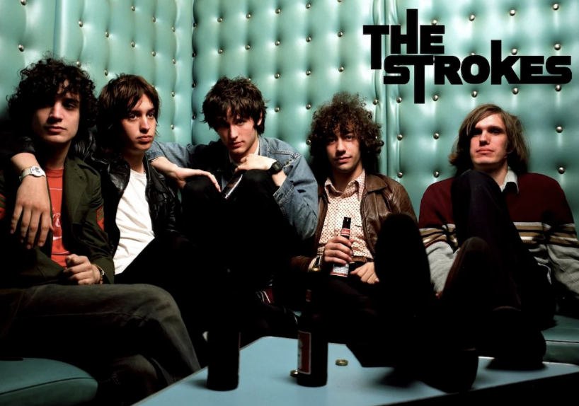
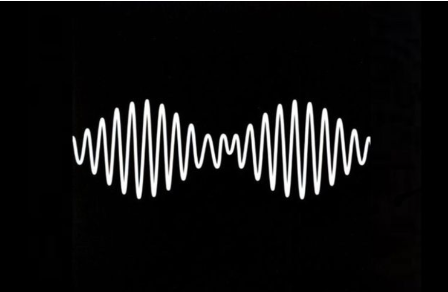

THE STROKES AND MINIMALIST COOL

The Strokes revolutionized indie rock fashion in the early 2000s with their effortlessly cool aesthetic. The New York band brought a minimalist, vintage-inspired look that became the blueprint for indie style - leather jackets, skinny jeans, Converse sneakers, and perfectly tousled hair.
Julian Casablancas and his bandmates made thrift store finds look expensive and careless style seem carefully curated. Their look was a reaction against the excess of previous decades, favoring simplicity and authenticity over flash and spectacle. This aesthetic extended beyond clothing to their album art, music videos, and overall visual identity.
What made The Strokes' style so influential was its accessibility. Unlike punk's aggressive DIY approach or grunge's deliberate sloppiness, indie style felt attainable and aspirational. You could find these pieces anywhere - vintage shops, department stores, your older brother's closet. The key was wearing them with the right attitude of nonchalant confidence.
Fashion magazines quickly caught on, with high-end designers creating expensive versions of the band's thrift store aesthetic. The indie look became a staple on runways worldwide, proving that sometimes less really is more.
ARCTIC MONKEYS: FOREVER COOL

Arctic Monkeys brought a distinctly British twist to indie fashion, combining working-class authenticity with stylish sophistication. Alex Turner's evolution from Sheffield teenager to dapper frontman mirrors the band's musical journey and showcases indie fashion's versatility.
In their early days, the band embraced a casual, accessible look - hoodies, track jackets, and trainers that reflected their northern England roots. This wasn't fashion-conscious styling; it was genuine reflection of their background and community. Young fans could easily emulate the look because it came from regular high street shops.
As the band matured, so did their style. Turner began incorporating vintage elements - pompadour hairstyles, leather jackets, and tailored suits - creating a more refined indie aesthetic. This evolution showed that indie style could be sophisticated without losing its edge or authenticity.
The Arctic Monkeys aesthetic particularly influenced British fashion, where indie style blends mod revival, punk attitude, and contemporary streetwear. Their look represents a lineage of British rock fashion that connects The Beatles, The Smiths, Oasis, and modern indie bands in a continuous thread of cool.
TAME IMPALA'S PSYCHEDELIC AESTHETIC

Tame Impala brought psychedelic vibes back to indie fashion, blending 1960s counterculture aesthetics with modern sensibilities. Kevin Parker's visual identity for the project incorporates swirling colors, retro patterns, and a dreamy, experimental approach that extends from album art to stage design to personal style.
The Tame Impala aesthetic embraces vintage elements - flowing fabrics, bold patterns, wide-collar shirts, and flared pants - but reinterprets them through a contemporary lens. This isn't costume or pure nostalgia; it's a genuine fusion of past and present that feels both timeless and current.
Music festivals became the perfect venue for this aesthetic to flourish. Tame Impala's influence can be seen in festival fashion worldwide, where attendees embrace colorful, flowing, pattern-heavy outfits that create a sense of communal experience and visual spectacle.
Fashion brands have embraced this psychedelic indie revival, with designers incorporating tie-dye, paisley, and kaleidoscopic patterns into their collections. What was once associated with 1960s hippie culture has been reimagined for a generation that values both individual expression and collective experience.